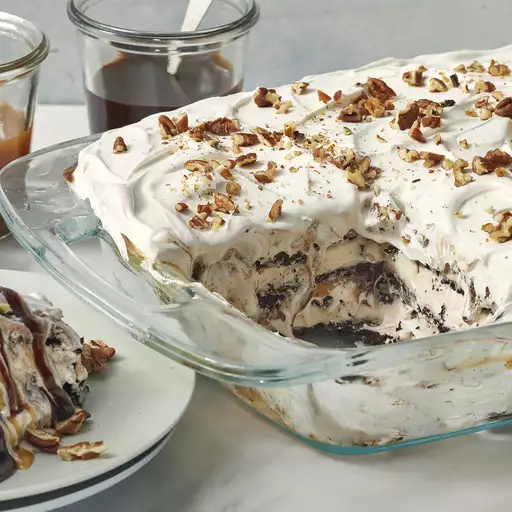

Ice Cream Sandwich Cake

Picture of an ice cream sandwich cake.
Beloved summer time cake where there are no
leftovers! Yeilds one 9x13 inch cake that has
12 servings. This cake takes 30 minutes for
prep and is done in 1 hour.
Ingredients
- 24 vanilla ice cream sandwiches, unwrapped
- 2 (8 ounce) containers whipped topping, thawed
- 1 (12 ounce) jar hot fudge ice cream topping, warmed
- 1 (12 ounce) jar caramel ice cream topping, warmed
- 1/4 cup chopped pecans, or to taste
Directions
- In a 9x13-inch dish, arrange a layer of ice
cream sandwiches in the bottom.
- Top the sanwiches with a layer of whipped
topping, hot fudge topping, and caramel topping
- Repeat layering with remaining ice cream
sandwiches, whipped topping, fugde, and caramel,
ending with a top layer of whipped topping.
- Sprinkle top with pecans.
- Cover dish with aluminum foil and freeze until
set, about 30 minutes.